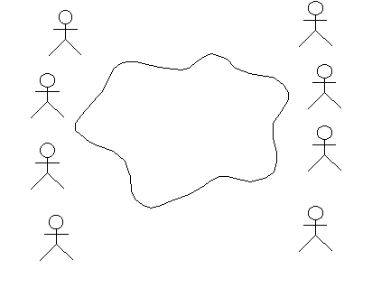
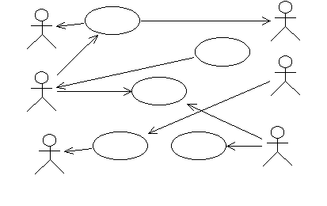
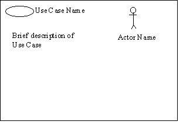
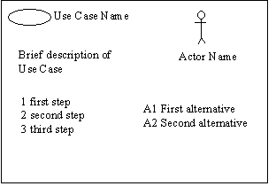
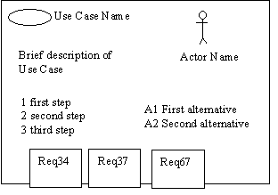

| Guideline: Use-Case Workshop |
 |
|
| Related Elements |
|---|
Organization of the WorkshopThe use-case workshop is an organized brain-storming meeting. A wide range of knowledge needs to be represented:
This means that the group will contain people with different backgrounds, knowledge and experience. Try to keep the group small (less than ten). A regular setting is to compile half of the group from the development team and the other half from user representatives. In the middle of this is the facilitator. The facilitator should play the role of a moderator - a catalyst for all ideas and wishes. ToolsTools that you need are:
Defining ActorsTry to identify who or what will use the system. Start initially with actual people who will use the system; most people have an easier time focusing on the concrete versus the abstract. As users are identified, try to identify the role the user plays while interacting with the system - this is usually a good name for an Actor. When identifying actors, be sure to write a short description for each actor; usually a few bullet-points capturing the role the actor plays with respect to the system and the responsibilities of the actor will help later on when the time comes to determine what the actor needs from the system. When defining actors, do not forget about the other systems with which the system being designed interacts. The icon for an actor is misleading here - it seems to imply 'person', but the concept of actor encompasses systems as well. Focus first on finding the 'human' actors, though; most groups will do better when they focus on the familiar first, then consider the more esoteric. Don't worry about the structure of the Use-Case Model, or about relationships between actors; simply capture the people or things which will use the system. Focus on identification, and be prepared to find a lot of actors. Don't worry too much about filtering the list now; the identification of use cases (see below) will do that. An Administrative SystemAsk this question: What are the roles in the organization that will use this system? Draw a stick man for each role that is suggested, and write a name below the stick man. Then list two columns of actors on the white board - one on each side of the cloud or icon that you already drew. Sometimes it can be useful to use the word role or user instead of actor. Questions to ask:
 Instance or Class?You may get questions like "Why isn't Tom the actor? It's always Tom who does that". You will then need to ask more questions to gain an understanding of what Tom's role is. The name of the actor should reflect the role.
Many actors can be identified directly through their regular positions in the organization. A position in the organization could correspond to more than one role to the system. For example, Tom may be a regular depot worker as well as the person responsible for reorganizing the depot to create space for new products. Those two responsibilities may be two different actors to the system. Some people will want to generalize to the extreme. They may suggest a User as an actor - and then suggest that is the only actor we need. True - but boring, and doesn't add much to the understanding of the system. Try to avoid discussing this suggestion if it comes up. Note the User actor on the board and then proceed to the next actor. Tricks of the Trade
Defining the actors usually takes between 1 and 4 hours. The whiteboard should now list many actors, but make sure there is still room to add use cases. When the set of actors seems to be complete, it is time to start with the use cases.
 Define Use CasesErase the cloud or icon from the whiteboard, and start to identify use cases. Focus on concrete use cases - avoid discussion about include and extend relations. Draw an ellipse and write the name for every suggestion. Draw arrows to the actors. Use the fact that you don't know anything about their application as a strength. The participants of the workshop need to tell you what the system is supposed to do. You should ask a lot of questions about the system. When the participants provide you with explanations, use cases will appear. Some people can understand the concept of use cases right away, and some people cannot. To put the concept into an easier perspective, get somebody to draw a system view. A system view is an abstraction of the system. For example, it can be a server with a database and a number of clients, or a number of circuit boards with their special tasks marked out. This view is usually easy to illustrate: one of the participants will generally take a whiteboard pen and show how the system will work. The system view will help to make the use cases extend from system border to system border, and will implicitly point at a number of different system states. Ask questions about these states, and some more use cases will appear. Check what will happen when different communications die - this can help you identify alternative flows in the use cases. If you are working with a technical system, the system view is often something well-known to everyone and might be the best way to find actors. In this case, you might let them draw the system view before you start asking for actors. If you are working with an administrative system, the system view may not be as obvious to everyone. In this case, a graph describing the manual routines may be more useful. The graph may describe how one business entity is moved from one person to another and what they are supposed to do with it. To visualize the process of order and delivery, the graph may show a schematic view of the customer office, our office, the storage and the customer storage. Make sure that both the use-case model and the system view/business entity view are clearly visible to everyone. This is when having two white boards might come in handy. Allow the use cases to have long names. A recently identified use case may have a name as long as a sentence - this will be a good start on the brief description of the use case, and then the name will be shortened later on. There will always be a number of use cases that appear to have parts in common. Make sure everyone understands that this is acceptable for now. There is no point in structuring yet, since we don't know enough about the contents of the use cases. You should wait until after the flow of events has been outlined before you bring up any discussions about use-case relationships. When the group agrees that the use cases on the board cover the functionality of the whole system, break for lunch. Once you are back from lunch, review the results from the morning session:
Questions to ask:
Write Brief Description for each Use CaseWork with the use cases one by one, and create one easel chart for each use case. Draw an ellipse and write the name of the use case at the top of the chart. Take a pencil and ask the group to help you write a brief description of the use case. A brief description should be about 1 to 3 sentences. Sometimes it is useful to draw the actors connected to the use case. Try to leave about half the paper empty for the next step.

During this work, you will find out that there are some things that everybody thought were clear that are not actually
clear at all. Refer to the requirements identified as New use cases will appear. Some use cases will disappear. Put the use case papers on the walls. Try to organize them with one column per functional area. (Don't use the whiteboards for this -they are needed for the system view and actors and use cases.) If you can't solve questions immediately, write them down on a self-stick note and place them at the appropriate use case. Use one color for questions. When all use cases have an easel chart and a brief description, it is time for the next mode. It is often wise to take some time discuss if this really all the use cases that are needed. The model you have created so far may be documented in Rational Rose or Rational RequisitePro and generated into a Use-Case Model Survey report. Step-by-Step Description of the Flow of Events for each Use CaseThe way to start writing a use case is to structure the text first. There is no point in sitting alone and trying to structure the text without first obtaining input from the stakeholders. Work with the use cases one by one. Write down the different actions in order. Don't try figure out how things will look in code structures, loops, for-while statements, etc. - just work with the basic flow of events, and don't worry about alternatives. Enumerate the steps 1, 2, 3, 4, To help the group understand the required level of detail, you can say that you want 5 to10 steps in the basic flow. Once you've agreed on the steps in the basic flow of events, walk through it and identify alternative steps. Enumerate the alternative flows A1, A2, A3, A4,
 During this discussion a lot of issues will be raised, many of which will not be solved until you get to Analysis & Design. Remember to write down all issues, together with any assumptions you need to make along the way. Some of the issues need to be resolved soon so that the Requirements Specifier can detail the flow of events correctly, and some of them are things that you need to make sure are resolved before you start Analysis & Design. What you have on each easel chart now should be sufficient for the Requirements Specifier to be able to detail the flow of events of the use case. Capture Supplementary SpecificationsDuring this session, there will be several Requirements on the system that you may not be able to readily capture in a use case. Typically, these statements have to do with general functionality, usability, reliability, performance, and supportability of the system. Keep a separate easel chart where you note these statements. They will form a basis for your Supplementary Specifications. Trace Requirements to Use Cases
Walk through the key Stakeholder Requests and each feature in the Vision document and verify that the use-case model covers them in the
appropriate way. Discuss which user needs or requirements are

Take the Vision document and read the first There are always a number of Requirements that can't be connected to any use case:
Spend a few moments to review the structure of the room: Are there use cases with no requirements? Why? Is this use case not required? Or was this functionality forgotten by the person who wrote the requirement specification? (This is usually the case.) This situation has to be resolved. Is the customer aware that he needs this functionality? Is he willing to pay for it? |

© Copyright IBM Corp. 1987, 2006. All Rights Reserved. |